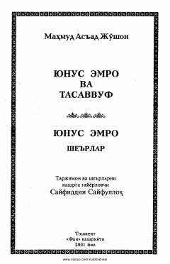

YEMutasavvuf shoir Yunus Emro hayoti, tasavvufiy qarashlari va she'rlari to'plami.
Ushbu risola buyuk mutasavvuf shoir Yunus Emroning hayoti, ijodi va tasavvufiy qarashlariga bag'ishlangan. Kitobda shoirning ilohiy va axloqiy-ma'rifiy she'rlari hamda ularning tarjimalari o'rin olgan.